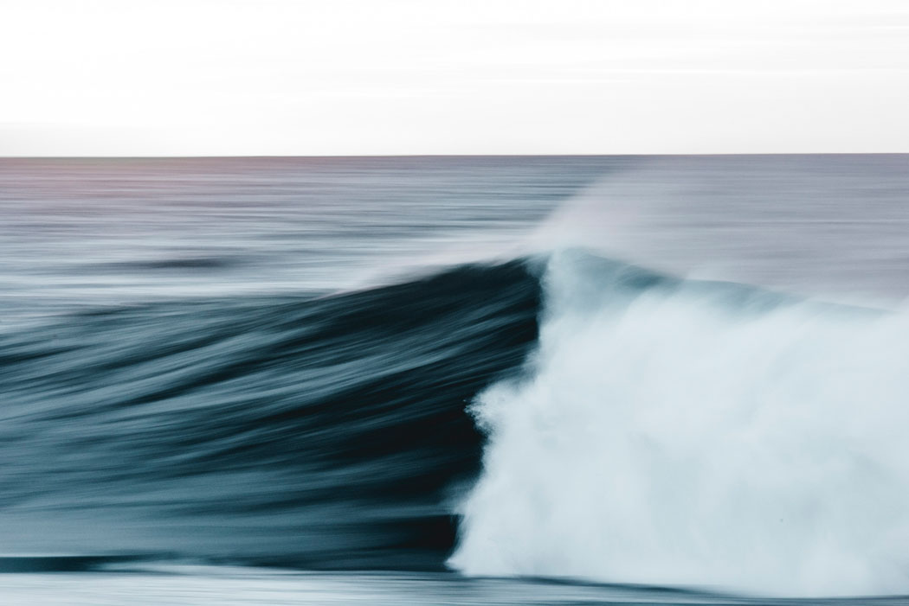

Sometimes life goes in a different direction. And out of something “bad” something good can develop or follow.
This is what happened in Jack’s life.
Picking up a camera and waterhousing in March 2016, Jack Noel Davis was introduced to photography after a back injury stopped him from surfing.
During his rehab, his camera helped him to reconnect with the ocean and reignite his passion.
And his pictures capture the love towards the incredible beauty of the sea in all its facets.
When did you start ?
I started taking photos in the water in March 2016, so just over a year ago. I injured my back pretty badly when I was younger which ultimately stopped me from being able to surf. I love getting in the ocean so the natural progression for me was to pick up a camera and shoot. I invested in a waterhousing and fell in love with the perspective from the water, it´s become quite an obsession since. I’m very thankful that a potentially bad situation yielded a new passion – Silver linings!

“I´m captivated by dark storms and capturing dark ocean texture. The ocean changes so much day to day so there’s always the excitement of not knowing what can happen next.”
What do you want to capture in your work?
I want to capture anything that evokes an emotion. From my perspective, the photos that evoke emotion are the most powerful and I find that my work that captures a darker mood ultimately evokes more emotion. The photographic work that inspires me has always evoked strong emotion and that’s what I seek to create for others. It’s a constant challenge to progress and produce great work but I love the journey.
What fascinates you about the water/ocean?
I´m captivated by dark storms and capturing dark ocean texture. The ocean changes so much day to day so there’s always the excitement of not knowing what can happen next. Ultimately I’m led by the light. Lighting will always dictate how I shoot.

“I believe making small changes in daily plastic consumption is a great way to do your part in keeping the ocean healthy because so much of it ends up in the ocean.”